Mesmo quem viveu para se vingar ainda pode escolher cuidar de alguém.
Estúdio: Red Candle Games
País: Taiwan
Ano: 2024
Gênero: Metroidvania
Temas: Vingança, Imortalidade, Exploração, Taoismo, Cuidado
Yi acorda depois de séculos adormecido, num mundo chamado Nova Kunlun, e decide se vingar dos Sols, os líderes que o traíram. O caminho dele muda quando conhece Shuanshuan, uma criança humana que passa a acompanhá-lo.
Os Sols querem escapar de uma doença chamada Tianhuo e, para adiar o fim do próprio povo, usam os humanos como matéria-prima. O jogo pergunta até onde alguém pode ir para não morrer, e quem paga por isso. A busca pela imortalidade aparece como uma forma de egoísmo que destrói tudo em volta.
O próprio Yi não é inocente, porque ajudou a criar esse sistema. Por isso, a história é menos sobre vingança e mais sobre responsabilidade. Na convivência com Shuanshuan, ele descobre que ainda é capaz de cuidar de alguém, e essa relação muda o que ele quer fazer com o fim da jornada.
O estúdio chama o estilo de taopunk, uma mistura de taoismo com cyberpunk: tecnologia avançada ao lado de ideias antigas sobre equilíbrio e natureza. O nome lembra a lenda chinesa do arqueiro Hou Yi, que derrubou sóis do céu.
O jogo é da Red Candle Games, fundada em setembro de 2015 em Taipei por seis pessoas, entre elas Henry Wang, Coffee Yao e Vincent Yang. O estúdio ficou conhecido pelos jogos de terror Detention (2017) e Devotion (2019). Em Nine Sols, Shih-Wei Yang assinou a direção e a produção, e Hans Chen, a direção de arte.
Foi a primeira vez que o estúdio saiu do terror. A equipe buscou inspiração em Sekiro para o combate baseado em defender no momento certo e em Hollow Knight para a exploração. O jogo foi anunciado em 2022, teve financiamento coletivo e saiu em maio de 2024.
A Red Candle Games é de Taiwan. Os dois primeiros jogos do estúdio falam da história recente do país: Detention se passa nos anos 1960, durante o Terror Branco, e Devotion nos anos 1980.
Devotion foi retirado das lojas em 2019, depois de uma polêmica na China por causa de uma imagem escondida que zombava de Xi Jinping. Depois disso, o estúdio criou uma loja própria. Em Nine Sols, a cultura taiwanesa e a chinesa aparecem no taoismo, na arte e nas lendas que formam esse mundo.
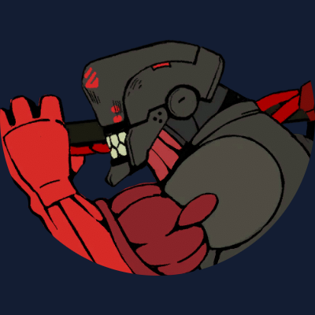
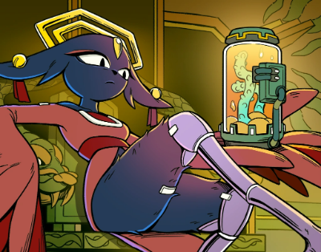
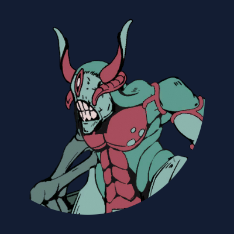
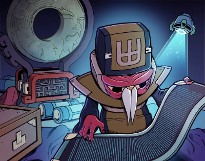
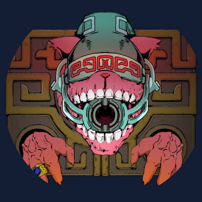
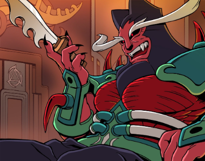
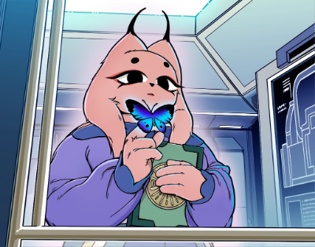
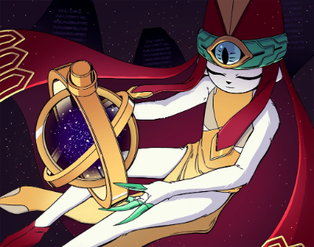
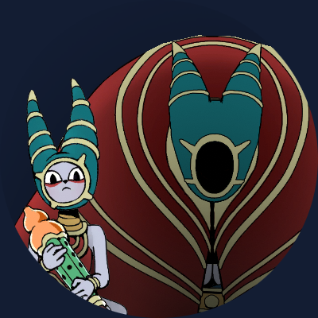
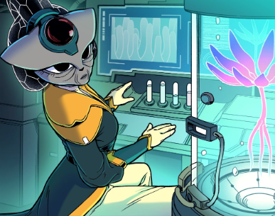
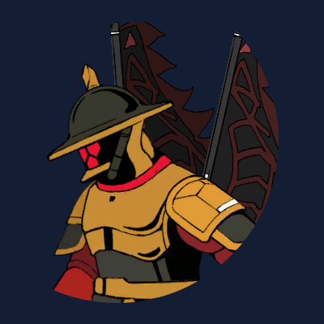
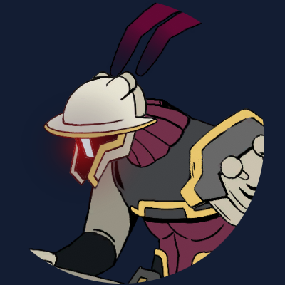
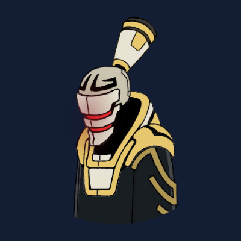
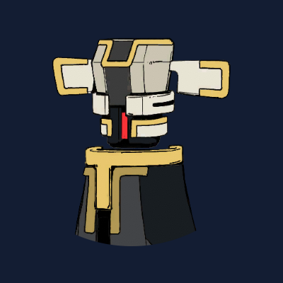
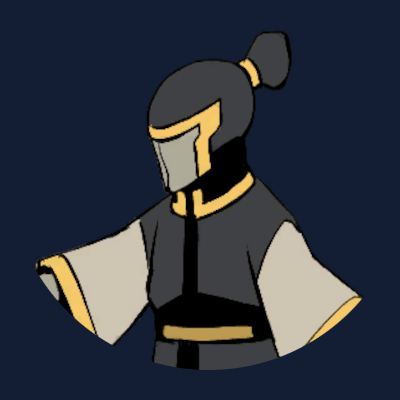
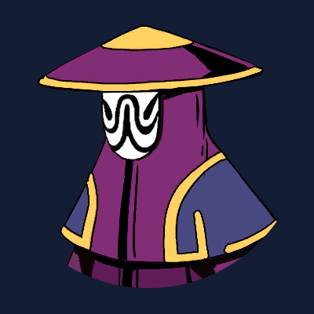
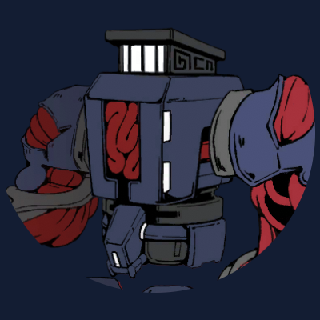